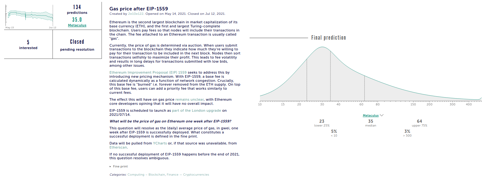

Predicting the Future
A well documented fact within the field of forecasting (see the book - Superforecasting: The Art and Science of Prediction) is that the average of a group of forecasters' predictions is, over a long enough time-frame, better than any individual's set of forecasts. The principal cause of this is that forecasters are human and therefore sometimes make mistakes or do not use all the information availble to them. The process of averaging out the forecasts will reduce the affect of any single mistakes leading to a more accurate and robust forecast. We therefore propose a forecasting DAO to take advantage of this fact which would work as follows: A group of forecasters all create forecasts for an event and send them to a smart contract. The overall forecast would be the average of all the individuals forecasts. This forecast could then be used to make money in prediction markets or sold off to 3rd parties such as hedge funds, profits would then be distributed to the forecasters through another smart contract.
We believe that the true value of forecasting goes far beyond point estimates of events. In fact the most value lies in the full distribution (more specifically, a posterior distribution - for the bayesian inclined readers) over event outcomes and not just point prediction that represents the single most likely outcome (which would be the modal value of the curve). An example shown below is from the forecast aggregation site Metaculus for predicting the gas price 1 week after the heavily anticipted Ethereum update EIP-1559.
A modal value of about 30 gwei is predicted by the forecasters but what is more interesting is the long tail on the right of the distribution. This shows that the forecasters assign non-negligible probabilities to gas prices that are far from the point prediction of 30. This tail information is in many contexts far more valuable than the peak. For example, if you are a protocol that has smart contracts which depend on the gas price remaining below 100, having an estimate on the likelihood of it exceeding 100 would be immensely valuable to you.
Our goal with Whiptail is to create a decentralized forecasting engine that can provide robust and on demand forecasts in a wide range of different domains. We believe there would be interest in these forecasts from various organizations including hedge funds, bookies, governments, and even other DAOs. Additionally, the information could be used to trade in prediction markets directly to make profit for the DAO, however this would require an in house trading team and would therefore be significantly more difficult to set up (initially at least!).